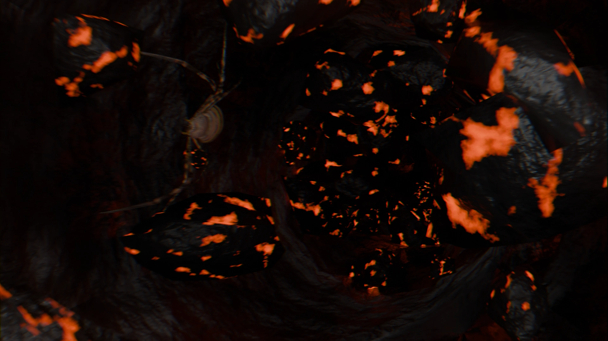

Halloween Projekt Binaural
Ein Blender Projekt erstellt mit vorgefertigten Assets und binauralem Audio. Diese Lernprojekt wurde im Rahmen einen Digezz Produktion realisiert und wurde ursprünglich von der Ausstellung im Tinguely Museum von Julian Charrière "Midnight Zone" inspiriert. Es diente ausserdem als Spielwiese für die Umsetzung der binauralen Audio-Methode. WORK IN PROGRESS